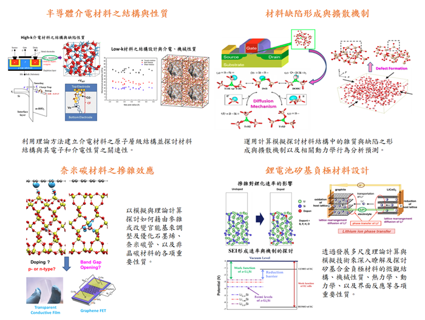

師資

國立臺灣大學 材料科學與工程學系 郭錦龍 副教授
學歷：
- 1999/07 - 2004/07 康乃爾大學博士
- 1994/09 - 1996/07 台灣大學碩士
- 1990/10 - 1994/07 台灣大學學士
經歷：
- 2007/8-2013/8 台灣大學材料系助理教授
- 2005/1-2006/7 美國德州大學化工系博士後
榮譽獎項:
- 104年度臺灣大學教學優良獎
- 99年度臺灣大學教學傑出獎
研究摘要:
本實驗室的主要研究目標在於有效整合運用各種計算物理、計算化學、與分子模擬等當代理論工具，並配合高速電腦運 算來探討分析材料的微觀結構與其各種重要基本性質之間的 關聯性。藉由這些相關基本知識的建立，我們將得以進一步 瞭解及預測在不同環境下該材料系統在原子層級或奈米尺度 下可能發生的行為現象與特徵，並對其背後存在的物理機制 提出解釋。研究的成果將可對未來新材料的設計與開發提供 有效的助益。
研究主題: 個人著作-郭錦龍教授
